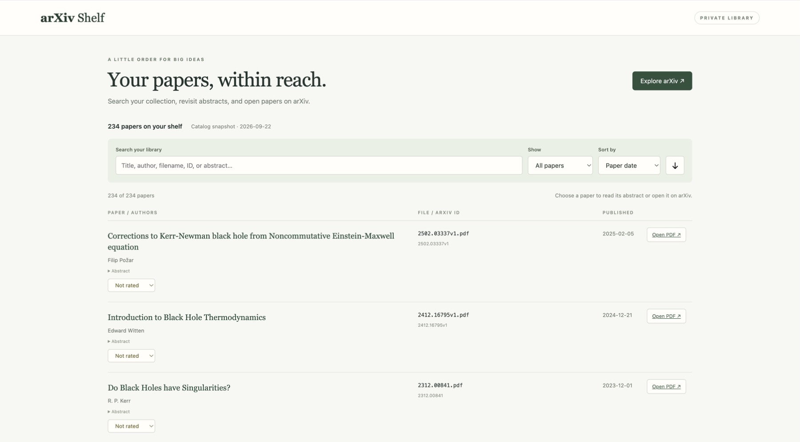

A little order for big ideas
arXiv Shelf
Your papers, within reach.
A searchable personal library for papers downloaded from arXiv. Find your next read with search, filtering, sorting, abstracts, ratings, and links back to the papers on arXiv.
The hosted browser edition may require permission to access.

One collection, two ways to use it.
Browse on the web
The hosted browser edition is a convenient way to read and browse a snapshot of the synced catalog. Search the collection, revisit abstracts, and open papers on arXiv. Browser ratings stay in that browser.
Keep the full shelf locally
The fuller local application can scan your Downloads folder, open local PDFs, download missing papers, maintain a portable catalog, and synchronize it between computers.
Open source · Make it yours
A shelf for your own ideas.
arXiv Shelf is open source. You can clone the repository, run it locally, or use your preferred coding or AI assistant to adapt it for your own paper library and workflow.
Get started with the README